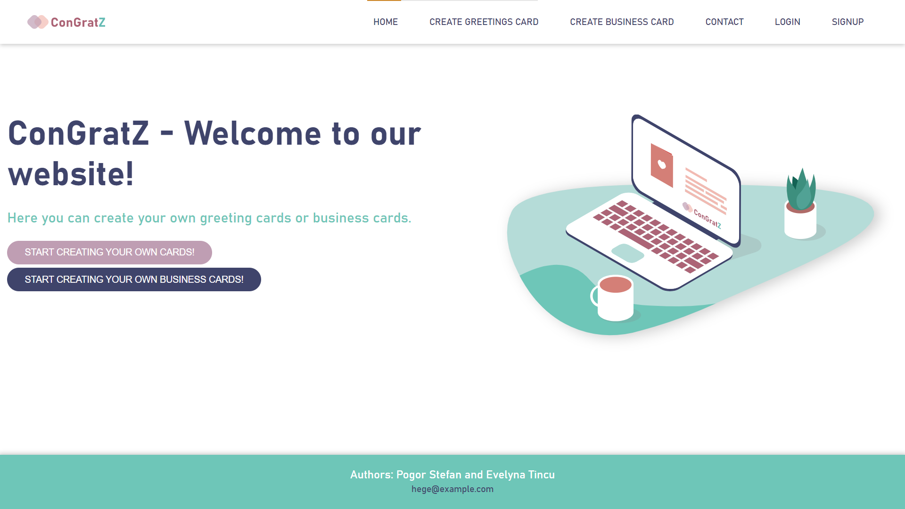
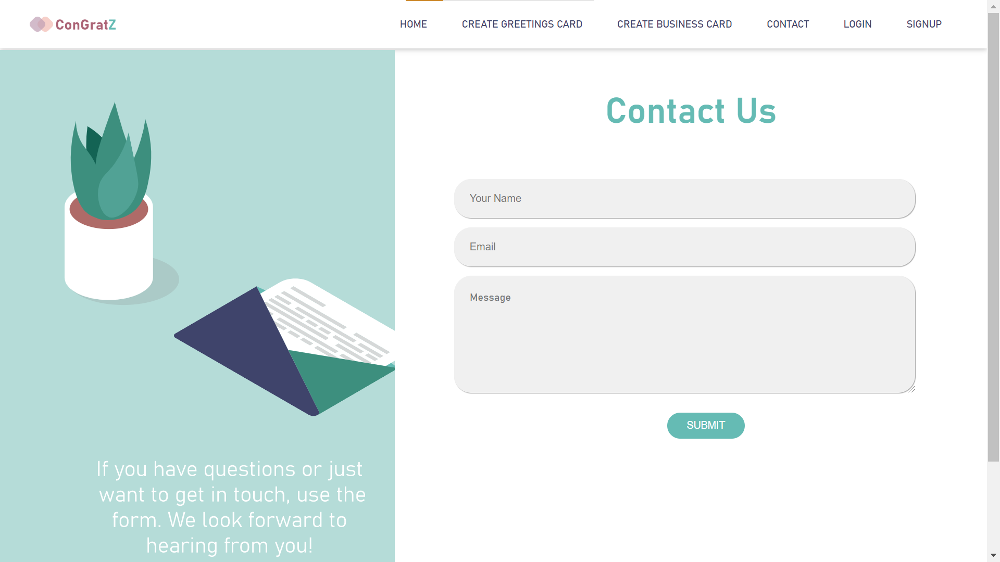

Introducere
1.1 Scop
Site-ul ConGratZ este destinat persoanelor ce vor să își creeze propriile felicitări pentru zile aniversare și ocazii speciale, dar și cărți de vizită pentru business, într-un mod cât mai ușor și intuitiv. Este ușor de utilizat: accesezi situl, după îți creezi propria felicitare/carte de vizită.
1.2 Audiența țintă
Acest document este destinat tuturor persoanelor ce doresc să afle mai multe informații despre site, cum ar fi: cum se folosește zona de editare a cărților de vizită/felicitărilor.
1.3 Scopul sitului
Site-ul are scopul de a ajuta userii care au nevoie de felicitări sau/și cărți de vizită personalizate într-un mod cât mai plăcut și ușor.
1.4 Referințe
Pentru a putea realiza o interfață a site-ului cât mai atractivă și ușor de folosit, am analizat câteva situri:
w3schools.comCloudflare.com
greetingsisland.com
Descriere
1.1 Perspectiva produsului
Produsul își propune realizarea de cărti de vizită și felicitări personalizate pentru utilizatori.
1.2 Funcționalitățile produsului
Cu ajutorul sitului, utilizatorii vor putea, cu sau fără cont, să își creeze propriile cărți de vizită/felicitări. Pentru felicitări utilizatorul va putea, într-un editor, să aleagă un cover design existent în baza de date sau va putea opta pentru o culoare a background-ului. Pe lângă această funcționalitate, utilizatorul va putea alege din baza de date stickere sau gif-uri, ori își poate încărca propria imagine. De asemenea, va putea adăuga text în orice culoare dorește, iar ca modalitate principală de export a felicitării este în format png.
Pentru cărțile de vizită, utilizatorul își va putea alege un cover design existent în baza de date sau va putea opta pentru o culoare a background-ului. De asemenea, își va putea încărca logo-ul pentru a putea fi vizibil pe cartea de vizită, va putea introduce datele personale legate de job, iar ca modalitate principală de export a cărții de vizită este în format pdf. Totodată, există și opțiunea de a genera un cod QR care va afișa doar datele cărții de vizită.
1.3 Categorii de utilizatori
Situl va putea fi folosit de orice persoană obișnuită cu cunoștințe minime de navigare pe un site, fiind intuitiv și usor de utilizat.
1.4 Mediu de operare
ConGratZ este o aplicație WEB ce folosește HTML, CSS, PHP și JavaScript, deci poate fi rulată în orice browser.
1.5 Design și constrângeri de implementare
Fiind o aplicație online ce creează felicitări și cărți de vizita, trebuie să ne limităm la o dimensiune specifică acestora. Astfel, vor putea fi adăugate imagini/text/elemente de design grafic într-o arie bine definită.
Cerințe externe
1.1 Interfață utilizator
Home Page
Greetings Card Page

Business Card Page
Login Page
Sign Up Page
Contact Page
1.2 Interfață software
Aplicația se conectează la o bază de date relațională pentru a putea stoca atât datele utilizatorilor, cât și elementele de design destinate folosirii de către utilizatori.
1.3 Interfață de comunicare
User-ul și server-ul folosesc protocolul de comunicare HTTP pentru a interacționa.
Funcționalități Backend
1.1 Autentificare/Înregistrare
User-ul care deține deja un cont va introduce numele de utilizator și parola pentru autentificare, respectiv user-ul care nu are un cont va introduce pe lângă acestea și adresa de e-mail și numele complet pentru crearea unui cont. Datele introduse, după validare, vor fi trimise către server, unde se va realiza o comunicare cu baza de date, folosind limbajul PHP și prepared statements (pentru a evita SQL injections), pentru a prelucra datele de conectare (inserare în baza de date, verificare existență cont).
1.2 Crearea de felicitări
Utilizatorul va dispune de o zonă în care își va putea crea propria felicitare, cu ajutorul următoarelor controllere implementate in JavaScript:
1.2.1 Butoanele load covers, load stickers și load gifs
Aceste trei butoane au la bază call-uri AJAX. Prin apăsarea unuia dintre butoane este rulat un JavaScript care preia path-urile elementelor de design aferente fiecărui buton din baza de date, după care le introduce în tag-uri "img" și le afișează în pagină, fără a reîmprospăta pagina. De asemenea, înainte de a alege un element de design ce va fi inserat în felicitare, trebuie completate câmpurile ce conțin coordonatele acestora, cât și dimensiunea.
1.2.2 Butonul fill
În cazul în care utilizatorul nu dorește să folosească un cover design existent, poate selecta o culoare din color picker, culoare ce va seta background-ul felicitării.
1.2.3 Uploader-ul
Utilizatorul are posibilitatea de a adăuga orice imagine dorește prin intermediul uploader-ului, dar înainte va trebui să completeze câmpurile ce conțin coordonatele acesteia, cât și dimensiunea.
1.2.4 Text
În caseta input destinată introducerii de text utilizatorul poate introduce un mesaj ce va apărea pe felicitare după completarea câmpurilor ce conțin coordonatele acestuia, dimensiunea și culoarea.
1.2.5 Download PNG
Utilizatorul va putea descărca felicitarea realizată în format PNG.
1.2.6 Reset canvas
Odată cu apăsarea acestui buton, felicitarea va fi resetată, adică totul va fi șters.
1.3 Crearea de cărți de vizită
Utilizatorul va dispune de o zonă în care își va putea crea propria carte de vizită, cu ajutorul următoarelor controllere implementate in JavaScript:
1.3.1 Butonul load images
Acest buton are la bază un call AJAX. Prin apăsarea acestuia este rulat un JavaScript care preia path-urile elementelor de design aferente butonului din baza de date, după care le introduce în tag-uri "img" și le afișează în pagină, fără a reîmprospăta pagina.
1.3.2 Butonul fill
În cazul în care utilizatorul nu dorește să folosească un cover design existent, poate selecta o culoare din color picker, culoare ce va seta background-ul cărții de vizită.
1.3.3 Uploader-ul
Utilizatorul are posibilitatea de a își adăuga logo-ul prin intermediul uploader-ului. Acesta va fi inserat într-o zonă predefinită.
1.3.4 Text
Casetele input destinate introducerii datelor personale vor fi completate de către utilizator și vor fi inserate într-o zonă predefinită.
1.3.5 Download PDF
Utilizatorul va putea descărca cartea de vizită realizată în format PDF.
1.3.6 Generate QR
După apăsarea acestui buton, va fi afișat un cod QR, ce va conține datele personale ale utilizatorului.
1.3.7 Reset canvas
Odată cu apăsarea acestui buton, felicitarea va fi resetată, adică totul va fi șters.
1.4 Contact
Utilizatorul va putea lua legătura cu administratorii sitului pentru orice eventuale probleme sau întrebări.
Cerințe non-funcționale
Aplicația WEB este una sigură, posibile probleme ar putea apărea din partea bazei de date folosite.
Aplicația este protejată împotriva atacurilor de tip SQL-injection.